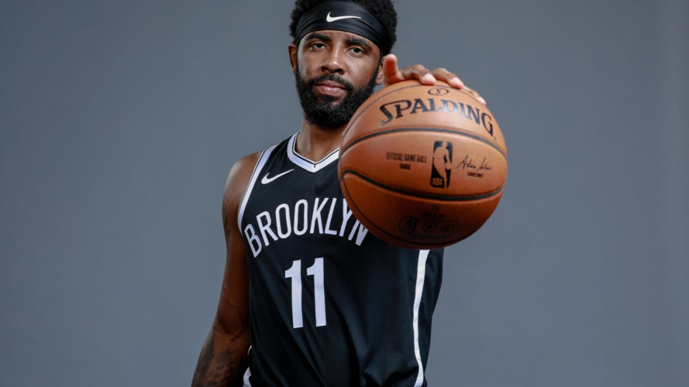
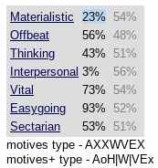

My strongest personality trait would be my creativity.
Always being able to find a way to get what I want done
no matter the given time frame. This really helped me alot
throughout prep school, high school and even now being at Utech.
The emotion that I believe I portray the most is my carefree
outlook on life which also ties into my genuine nature as a person.
As far as hobbies are concerned, I love playing basketball
and listening to Rhythm & Blues.
Coming to Utech, one of my biggest issues was adapting to a new environment,
a new schedule and needing a new mindset to make it to the finish line.
Because of my creativity which was always inspired by my curiosity,
I've always been able to keep my mind motivated and moving because
of my interest in the Degree I'm persuing. I've also been able to find
those around me whom I have a connection with while being here so far.
My idol/hero would be Kyrie Irving.
 Kyrie Irving is an NBA basketball player who was first drafted by the Cleveland Cavaliers in 2011/
He was born on March 23,1992, a day before mine. Widely known for playing his point guard position for the Cleveland
Cavaliers and winning a Championship back in 2016. Ironically enough, Kyrie Irving is 11 letters long
He was born at 1:11, his father, Drederick Irving wore the number 11, which Kyrie now wears for the
Dallas Mavericks. He also scored his 11,000th point on March 11.
I chose him because of what I see that he stands by and the certain level of positivity he brings
with him. He is also my favorite NBA play but that wasn't the only reason I chose him.
My favorite Quote by him is "Greatness is not meant for a few chosen people, its meant for
those who persistently persue their dreams and make that choice everyday when they wake up."
I did the MOTIVES personality test and here are my results
 I've never been interested in personality tests but I can say for certain that it wasn't completely accurate
I feel as though I know myself enough to the point where a personality test shouldn't determine who I am to
myself.